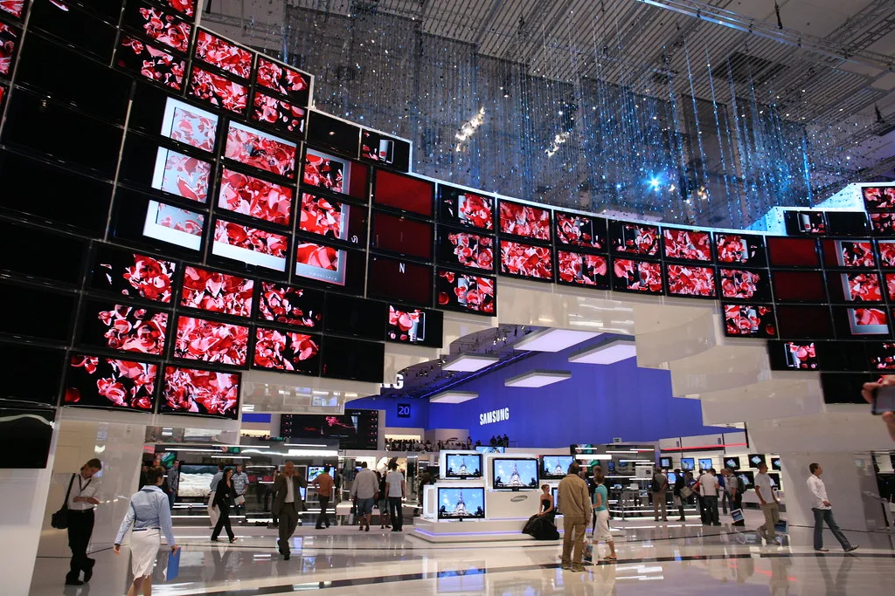

삼성전자, 8월 말 이사회서 '100조원대' 주주환원안 확정 전망
삼성전자가 이르면 이달 말 이사회를 열어 국내 상장사 사상 최대 규모로 꼽히는 100조원대 주주환원 정책을 확정할 것이라는 전망이 증권가를 중심으로 확산되고 있다. 반도체 업황 개선과 인공지능(AI) 메모리 수요 급증에 힘입어 올해 역대급 실적을 거두고 있는 삼성전자가 그동안 미뤄왔던 특별배당과 자사주 매입 계획을 구체화할 시점이 됐다는 분석이다. 고대역폭메모리(HBM) 등 AI 반도체 수요가 계속 확대되면서 현금 곳간이 예상보다 빠르게 불어난 점도 이번 환원 논의를 앞당긴 배경으로 꼽힌다.
삼성전자는 앞서 2024년부터 2026년까지 3년간 잉여현금흐름(FCF)의 50%를 주주에게 환원하겠다는 정책을 발표한 바 있다. 이 정책에 따르면 연간 9조8000억원 규모의 기존 정규배당을 유지하는 한편, 이를 제외하고 남는 재원은 특별배당이나 자사주 매입·소각 등에 투입하도록 돼 있다. 증권가에서는 삼성전자의 올해 FCF가 260조원을 넘어설 경우, 정규배당을 뺀 추가 환원 재원이 130조원 안팎에 이를 수 있다고 추산하고 있다.

구체적인 활용 방식을 둘러싼 시나리오도 다양하게 제기되고 있다. 일부 증권사는 삼성전자가 추가 재원 가운데 상당액을 자사주 매입에, 나머지를 특별배당에 나눠 활용할 수 있다는 시나리오를 내놓고 있다. 다만 실제 배분 비율과 시행 시기는 이사회 의결을 거쳐야 확정되는 만큼, 현재로서는 여러 관측이 엇갈리는 상황이다. 시행 시점을 한 번에 발표할지, 특별배당과 자사주 매입을 시차를 두고 순차적으로 집행할지도 아직 확정되지 않은 것으로 알려졌다.
삼성전자 측은 지난달 말 2분기 실적 발표 자리에서 특별배당을 포함한 새로운 주주환원 방안을 3분기 중 공개하겠다고 예고한 바 있다. 당시 삼성전자는 "구체적인 방안을 조만간 공개할 예정이니 믿고 기다려 달라"는 입장을 내놓으며 시장의 기대감을 한층 끌어올렸다. 시장에서는 늦어도 다음 달 이전에는 환원 규모와 방식이 구체적으로 제시될 가능성에 주목하고 있다.

같은 시기 SK하이닉스 역시 새로운 주주환원 방안을 준비하고 있어 두 반도체 기업의 움직임이 함께 주목받고 있다. 다만 두 회사가 택할 것으로 예상되는 환원 방식에는 차이가 있다는 관측이 나온다. 삼성전자가 현금배당 중심의 환원에 무게를 두는 반면, SK하이닉스는 자사주 소각을 통한 환원 비중을 상대적으로 높일 수 있다는 전망이 제기되고 있다.
시장에서는 이번 주주환원 발표가 실제 주가 흐름에 어떤 영향을 미칠지에도 관심이 쏠린다. 증권업계 관계자들은 환원 규모 자체보다 시장의 기대치와 실제 발표 내용 사이의 차이가 주가에 더 중요한 변수로 작용할 수 있다고 지적한다. 이 때문에 삼성전자가 발표할 구체적인 배당·매입 규모와 시행 일정에 투자자들의 관심이 집중되고 있다.
삼성전자와 SK하이닉스 모두 최근 몇 년간 대규모 설비투자를 이어온 만큼, 이번 주주환원 정책이 향후 투자 여력에 미칠 영향도 함께 짚어봐야 한다는 목소리도 나온다. AI 반도체 경쟁이 갈수록 치열해지는 상황에서 주주환원과 미래 투자 재원 사이의 균형을 어떻게 맞출지가 두 회사 모두에게 과제로 남아 있다는 평가다. 업계에서는 이달 말로 예상되는 이사회 결과가 나오는 대로 구체적인 내용을 다시 확인할 필요가 있다고 보고 있다.